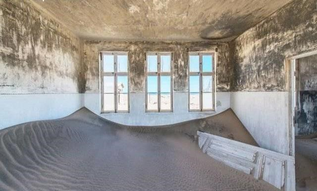
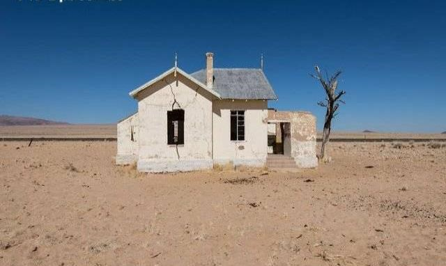
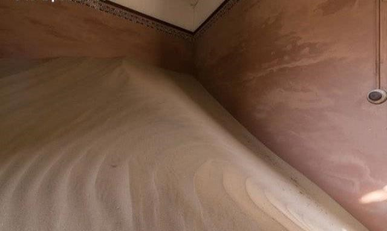
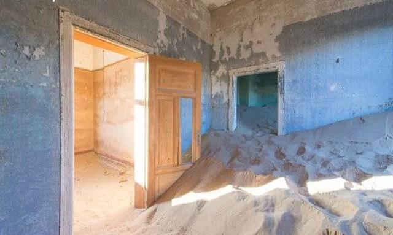
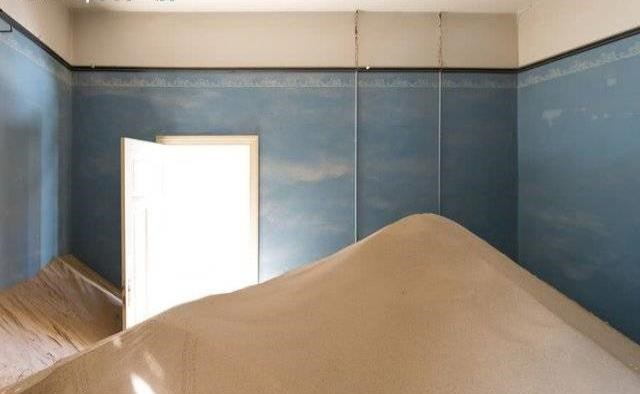

人类的历史是一个有着非常丰富的一面，在这个历史当中，所有的文化都有着不同的一面，也就是这样的不同，才构成了人类丰富多彩的画卷。然而不论是在任何一个国家当中，似乎都有着同样的一个定律，无论统治这一个国家的政权在刚刚建立的时候是多么的强大，在随着时间的流逝之后，从事会被另外的一个更为强大的政权所替代，其中的原因既有着因为统治权的不断的衰弱，也有着另外的一个统治者的不断的壮大，这些都是其中主要的原因。也正是因为这样，人们经常会说的一句话就是“盛极必衰”。也就是说无论是什么样的政权，这样的政权即使是再过巅峰，但是巅峰过后也必然是一片衰败的场景。这样的事情不仅仅是在一个国家的政权的身上，更是会体现在一个小小的镇子当中出现，一个曾经及其奢华，遍地都是钻石的小镇。
据了解，这座小镇名叫科尔曼斯科普，它曾经是纳米比亚一个非常著名的小镇，镇上的人们都过着非常奢华的生活，但是现在如果有人在进入到这个小镇的时候，能够看到的这座小镇宛如就像是一座鬼城一样，完全被沙漠掩盖住了，而且在这里也已经没有任何人居住了。这座小镇现今的模样可以用“荒凉”两个字来形容，不过也恰恰就是因为这样的荒凉，倒是吸引了很多的摄影师前来，有一位名叫RomainVeillon就在科尔曼斯科普小镇当中拍摄了很多的照片，很多人在看到这样的照片的时候，也完全不敢相信，这座小镇往日竟然会是一个极尽奢华的小镇。

一个从前遍地都是黄金的小镇，现在成为了一座毫无生机的小镇，没有人居住，更是成为了人们口中的“鬼城”，这样的落差着实是让人们难以接受，但是事实却就赤裸裸的摆在人们的面前。说起科尔曼斯科普小镇的故事，也算是一个非常久远的故事了，在上个世纪初的时候，1908年的那一年，这里还是属于德国的一片殖民地，德国的殖民者在这里发现了一大些钻石，也就是因为这些钻石的发现，在这个地方也就建立起来的一座小镇。之后很快的时间，这里就成为了一座非常奢华的小镇，资源的丰富让这座小镇迅速的繁荣起来，人们依靠着钻石发家致富，过上了非常享受的生活；在科尔曼斯科普小镇最鼎盛的时候，居住在这里的人口达到了1200人，虽然和现在是没有办法相比，但是在这样的一处荒漠当中会有这么多的人生活，在当时的那个年代已然是一件非常了不起的事情了；而在这座小镇当中，设施也是非常的齐全，在小镇当中分布着医院、学校、发电厂，还有泳池和赌场，可以说人们的生活极尽的享受了，不过也正是因为生活在荒漠当中，所以他们使用的淡水资源都是在开普敦运过来的，中间的距离足足有1000公里，除了这样之外，他们还会在法国进口上好的香槟。这么多的开销，人们完全不需要有任何的担心，整个小镇的生活都是奢华。



在这样的生活过了一段时间之后，这里很快便遭遇了从巅峰到覆灭的过程。因为人们对于钻石的资源好不珍惜，一直都大力的开采，终于这里的钻石资源也是越来越少了而随着马上出现的第一次世界大战，以及第二次世界大战，钻石的价格更是一跌再跌，人们的生活也不再奢靡，小镇也在逐渐的没落；最后让整个小镇完全消失，还是因为人们在南方发现了一座更为丰富的钻石矿，也就是在发现这座钻石矿之后，科尔曼斯科普终于就成为了人们废弃的小镇。从1908年到1954年，中间仅仅只有46年的时间，科尔曼斯科普便从一座奢华的小镇成为了一座无人问津的小镇，而到了现在更是没有人会在这里出现。
现在看到科尔曼斯科普的时候，更多的是黄沙漫天的赏景，整个小镇几乎已经完全被沙漠所淹没，完全变成了一座鬼城的模样，也不愧与人们给了它这样的一个称号。现在出现在这里的人们一般都是一些探险者或者是一些摄影师，人们通过这里破旧的房屋，荒凉的场景，来想象昔日的景象，所有的事情都已经成为了过去式，想要重新来过，已然是一件不可能的事情了。
